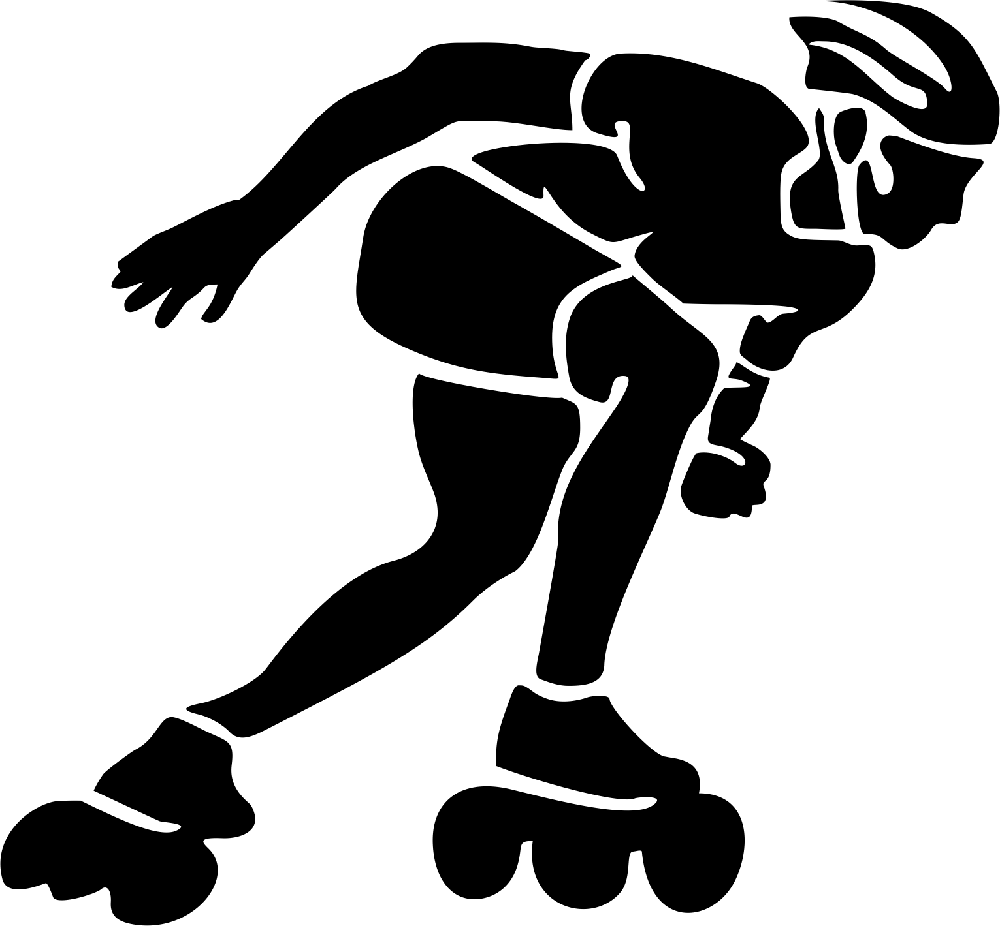

Speed-Skating-Inline
Wrotkarstwo Szybkie.
Nieolimpijska dyscyplina sportu polegająca na pokonaniu na rolkach
do jazdy szybkiej (inline skates) danego dystansu na torze lub szosie
w jak najkrótszym czasie. Wrotkarze poruszają się w średnim
tempie 30-40km/h. Technika jazdy znacznie różni się od jazdy fitness
na rolkach. Aby uzyskać wysokie prędkości wrotkarze wykorzystują odpowiednią
technikę podwójnego odepchnięcia "double push". Dzięki temu
maksymalne prędkości chwilowe na rolkach mogą przekraczać nawet 70 km/h.
Zawodnicy biorą udział w zawodach, które dzielą się na
długodystansowe (maratony i półmaratony) oraz krótkodystansowe (torowe i uliczne).